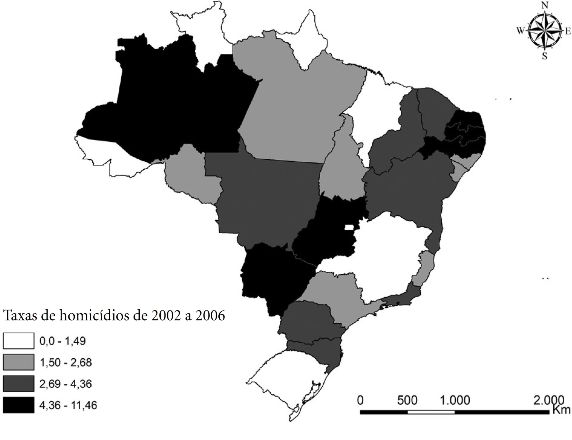
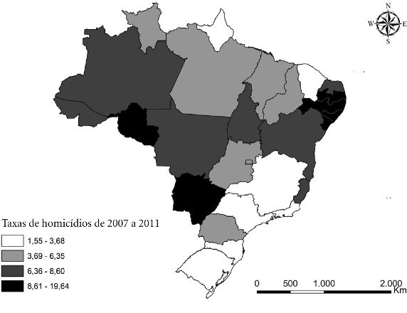
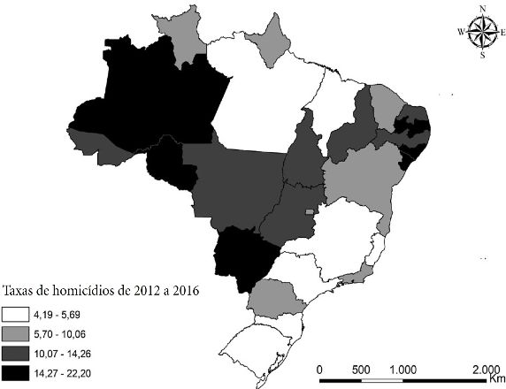
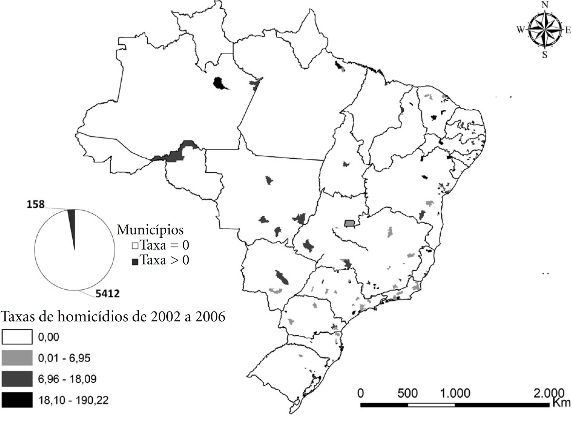
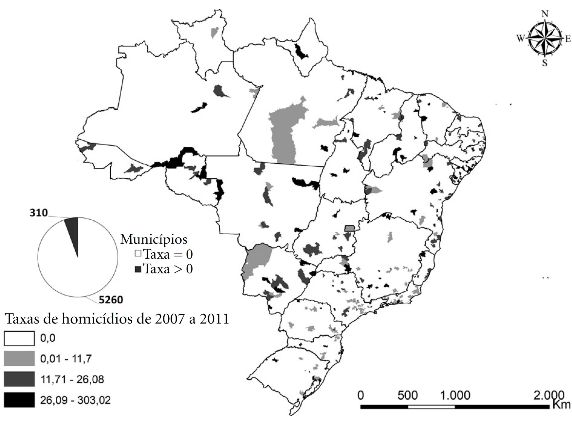
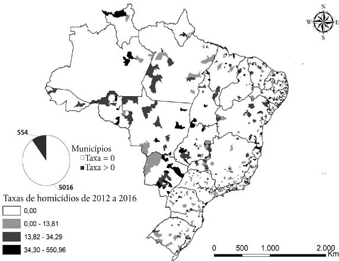

Apesar de todas as vitórias com o passar do tempo, viver como LGBT no Brasil é viver sob constante insegurança. Já que a comunidade sempre viveu uma perseguição ininterrupta, as imagens abaixo mostram o aumento crescente de casos violentos que ocorreram contra algum lgbt por todo o país. As imagens 1 até a 3 mostram casos em nivel estadual e as imagens 4 até a 6 mostram os aumentos por municípios. Para saber mais sobre o estudo mostrado pelas imagens acesse aqui.

Fig.1, gráfico que mostra a taxa de homicídio entre 2002 a 2006

Fig.2, gráfico que mostra a taxa de homicídio entre 2007 a 2011

Fig.3, gráfico que mostra a taxa de homicídio entre 2012 a 2016

Fig.4, gráfico que mostra a taxa de homicídio ocorrido em municípios entre 2002 a 2006

Fig.5, gráfico que mostra a taxa de homicídio ocorrido em municípios entre 2007 a 2011

Fig.6, gráfico que mostra a taxa de homicídio ocorrido em municípios entre 2012 a 2016